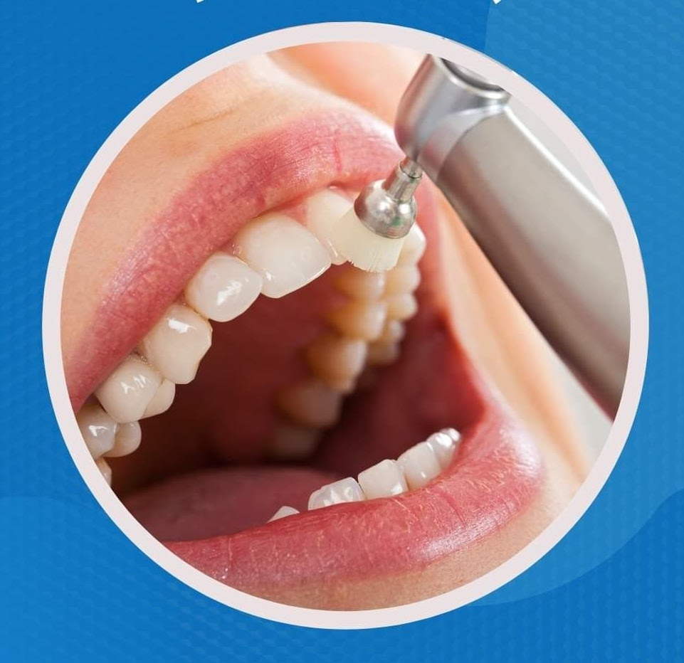
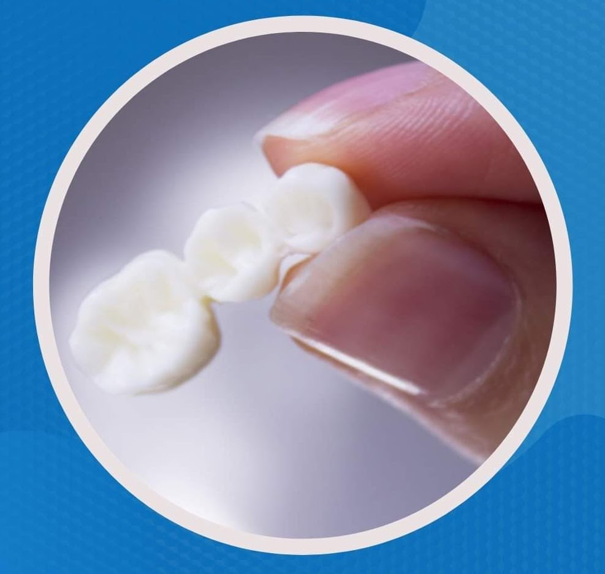
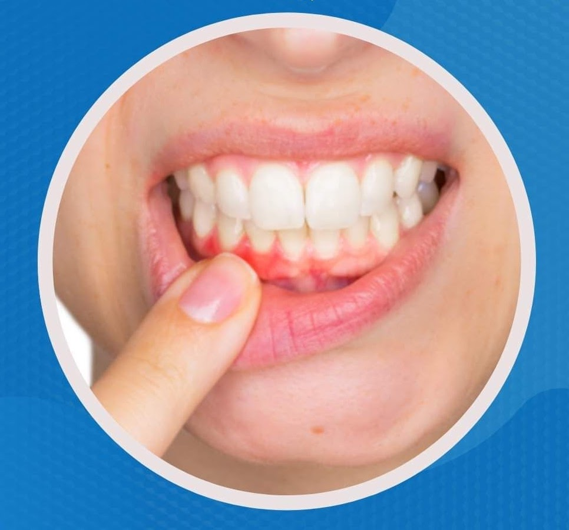
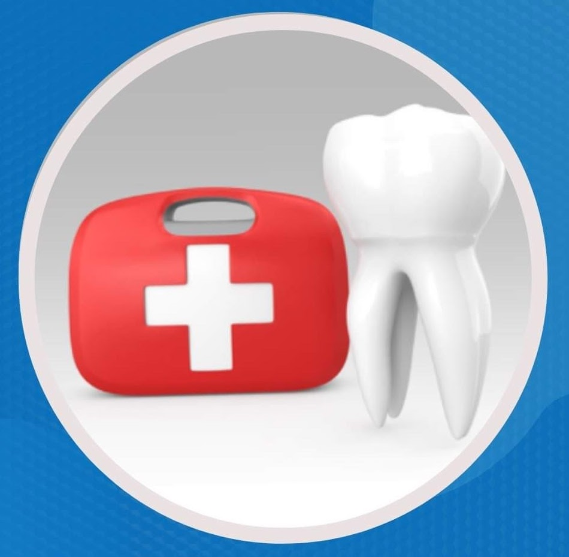
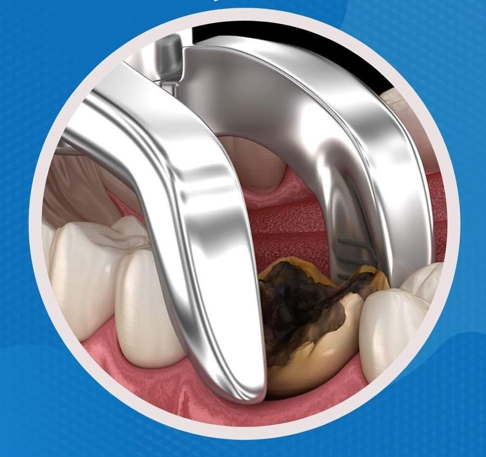
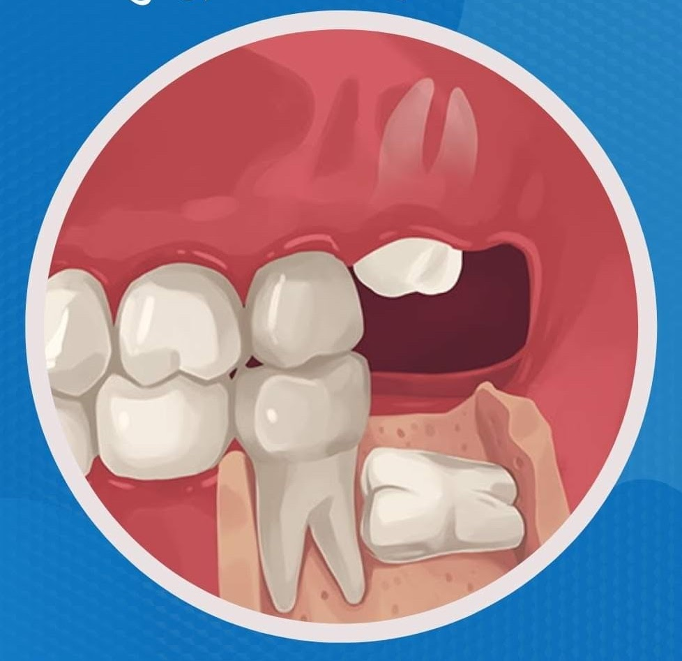
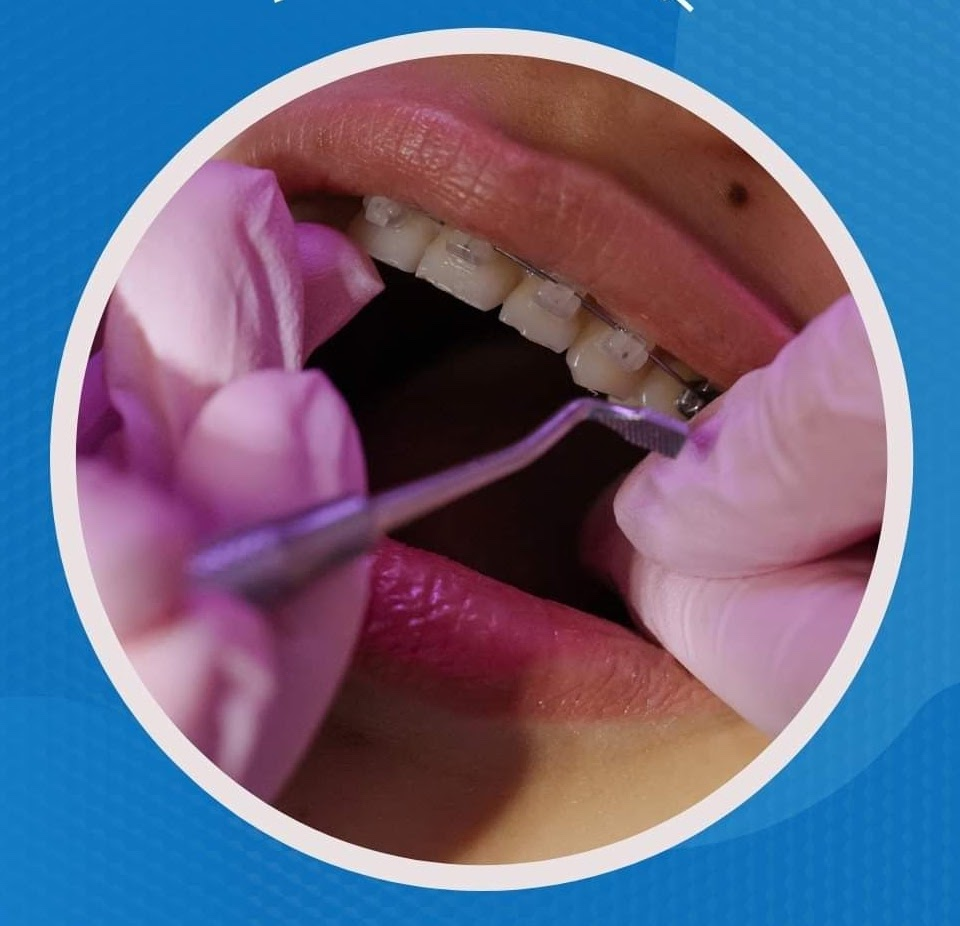
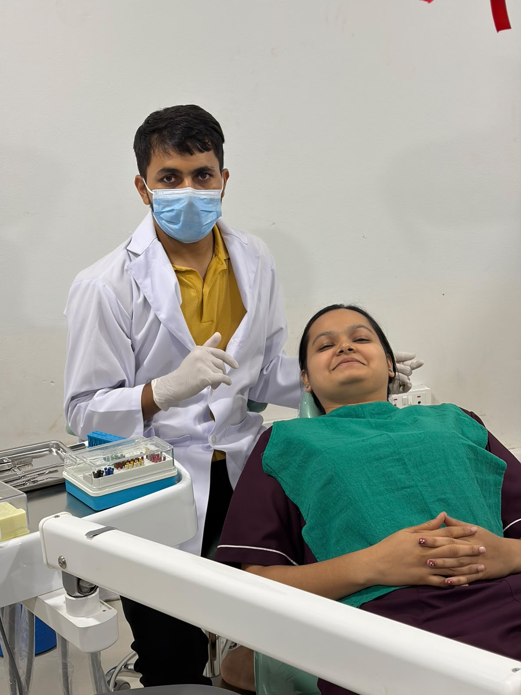
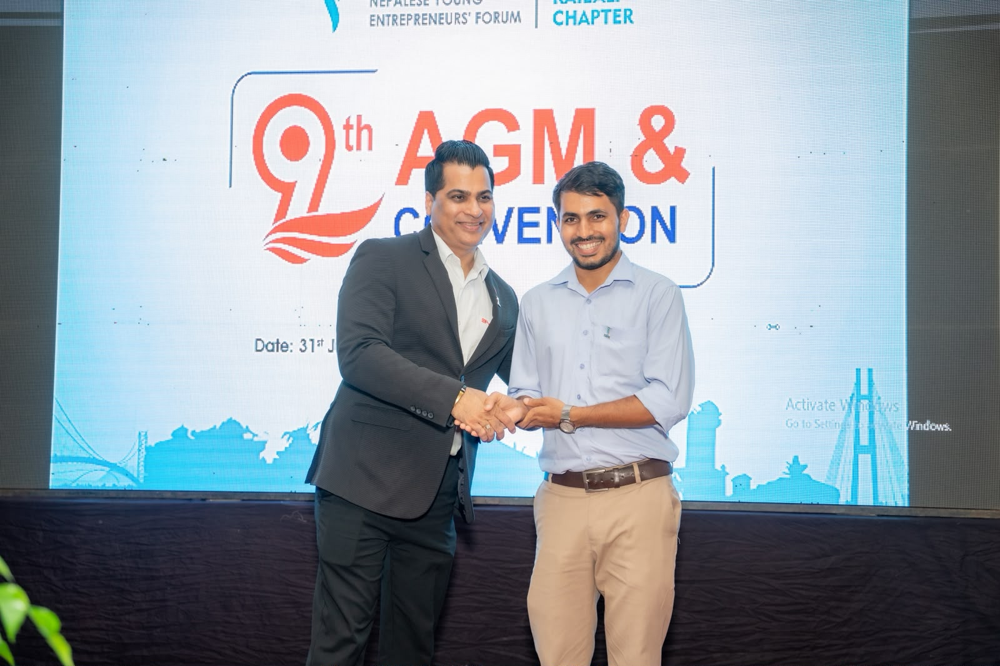
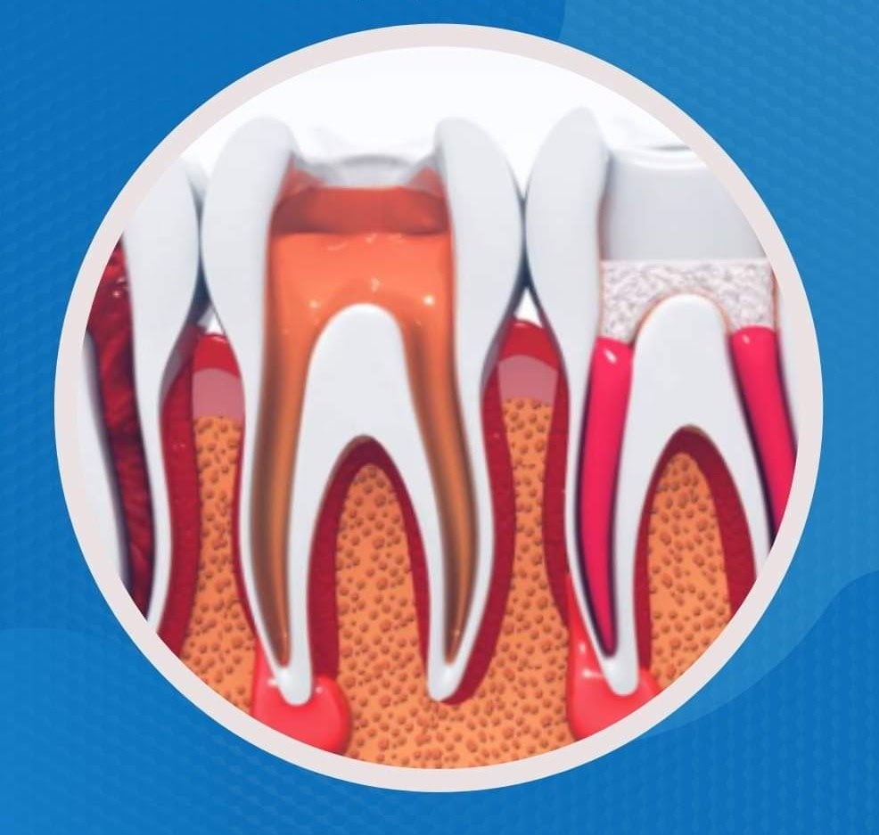

Teeth Cleaning & Scaling
Gentle ultrasonic scaling to remove calculus, plaque, and stains, protecting gum health and fresh breath.
Dedicated to providing patient-centered dental care with a focus on oral health, preventive dentistry, and comfortable treatment experiences. Committed to helping individuals maintain healthy smiles through professional care, clear communication, and evidence-based dental practices.
Every clinical procedure is guided by conservative tooth preservation, gentle pain-free techniques, and transparent guidance tailored to each patient's individual needs.

Dr. Amrit Jaishi completed his Bachelor of Dental Surgery (BDS) from B.P. Koirala Institute of Health Sciences (BPKIHS Dharan), one of Nepal's foremost autonomous medical universities. Serving as an Oral and Dental Surgeon at Dhangadhi Sanjeevani Hospital in Farwest Nepal, he brings over four years of rigorous clinical experience to daily patient care.
His approach to general dentistry is grounded in preventive education and conservative restorative treatments that safeguard the patient's natural tooth structure. Dr. Jaishi prioritizes a calm, supportive clinic environment where patients feel heard, informed, and completely at ease throughout every procedure.
Through continuous professional development and active participation in advanced clinical seminars, he stays at the forefront of modern endodontics, prosthodontics, and infection control standards.
Evidence-based preventive, restorative, and surgical dental treatments delivered with gentle precision.

Gentle ultrasonic scaling to remove calculus, plaque, and stains, protecting gum health and fresh breath.

Modern rotary endodontic therapy to eliminate deep pulp infection, relieve toothache, and save natural teeth.

Custom ceramic and zirconia crowns to reinforce treated teeth and restore chewing strength with natural aesthetics.

Targeted therapy for bleeding gums, gingivitis, and periodontitis to restore healthy, supportive pink gum tissue.

Prompt evaluation and pain relief for acute tooth trauma, cracked enamel, severe toothache, and facial swelling.

Careful, atraumatic tooth removal with socket preservation for non-restorable teeth and damaged roots.

Safe clinical diagnosis and gentle removal of painful, impacted third molars causing localized jaw ache and swelling.

Orthodontic assessment and corrective alignment for crowded or spaced teeth to achieve balanced functional occlusion.
Routine oral examinations, diagnostic screening, fluoride applications, and personalized dental hygiene guidance.
A chronological roadmap of formal medical university training, national clinical licensing, and specialized dental masteries.
Five-year rigorous university medical curriculum and full-time clinical rotations across Conservative Dentistry, Endodontics, Oral & Maxillofacial Surgery, Prosthodontics, Periodontics, and Community Dental Health.
Official clinical licensure and permanent registration with the Nepal Medical Council, granting full statutory authority for independent practice in dental surgery, diagnostic screening, and restorative procedures across Nepal.
In-depth clinical protocols covering multi-stage autoclave validation, surgical armamentarium chemical decontamination, surface barrier management, and zero-cross-infection protocols adhering to international healthcare standards.
Hands-on advanced clinical training focusing on single-visit rotary canal instrumentation, modern electronic apex locators, warm vertical 3D obturation, and biomimetic anterior composite shade stratification.
Active field leadership across regional mobile dental camps, conducting free diagnostic screenings, early caries interventions, topical fluoride therapy, and oral hygiene workshops across rural public schools.
Providing full-spectrum restorative, endodontic, prosthetic crown & bridge, periodontal gum therapy, and atraumatic minor oral surgical extractions with modern hospital facilities and patient-centered protocols.
Photographs from clinical consultations, surgical procedures, workshops, and community health camps.





Informative dental videos, oral health guides, and procedure demonstrations presented by Dr. Amrit Jaishi.
Dr. Amrit Jaishi demonstrates the modified Bass brushing method and correct flossing habits to prevent plaque accumulation and gingivitis.
05:20
A step-by-step patient walkthrough explaining modern painless rotary endodontic therapy, rubber dam isolation, and crown restoration.
Learn why routine professional scaling does not weaken your enamel, and how it protects supportive bone from periodontitis.
Clinical insights into diagnostic evaluation of impacted third molars, gentle surgical sectioning, and post-operative healing instructions.
Dr. Jaishi explains the differences in durability, aesthetics, and biocompatibility when choosing dental crowns after root canal treatment.
Practical emergency guidelines for knocked-out teeth, cracked enamel, severe swelling, and immediate first-aid before reaching the clinic.
Evidence-based oral care guidance, preventive tips, and clear answers to common dental questions.
Why routine biannual checkups and ultrasonic cleanings are essential for preventing hidden caries and gum disease.
Understanding enamel erosion, exposed root surfaces, and modern clinical desensitizing options for daily comfort.
Demystifying rotary endodontic treatment, pain management, and why preserving your natural tooth is the best choice.
How early gingivitis progresses to irreversible periodontal bone loss, and why gentle flossing and professional scaling reverse bleeding.
Comparing fracture toughness, translucent lifelike aesthetics, and biocompatibility when restoring treated teeth with permanent caps.
Clinical indicators for third molar extractions, preventative surgical timings, and essential 48-hour recovery guidelines.
How early childhood caries start from sticky snacks, and practical parenting steps for establishing lifelong dental brushing habits.
Original observational clinical studies and community health epidemiological surveys conducted in Nepal.
Prospective evaluation examining post-operative pain incidence and 12-month radiographic healing rates using NiTi rotary files in 85 patients across regional centers.
Cross-sectional field study analyzing CPITN indices, calculus accumulation, and brushing literacy across 420 adults in rural municipalities of Kailali district.
Assessment of spore test biological monitoring, pouch integrity validation, and infection control compliance in private and hospital dental clinics in Farwest Province.
Epidemiological screening of 310 primary school children documenting dmft scores, nocturnal feeding habits, and community fluoride toothpaste intervention outcomes.
Retrospective observational cohort comparing alveolar osteitis rates, trismus severity, and recovery timelines following surgical sectioning vs. conventional elevator luxation.
Official clinical centers where Dr. Amrit Jaishi conducts consultations and treatments.

Affiliation & Role: Consultant Dental & Oral Surgeon (Outpatient & Emergency Dental Department)

Affiliation & Role: Volunteer Visiting Dental Surgeon
For professional inquiries, hospital consultations, or clinical appointments.
Please feel free to reach out directly via phone or email. Patients seeking clinical consultations may also visit Dhangadhi Sanjeevani Hospital during scheduled outpatient hours.
This form is for general inquiries. For urgent dental emergencies, please call the hospital reception or emergency contact line directly.